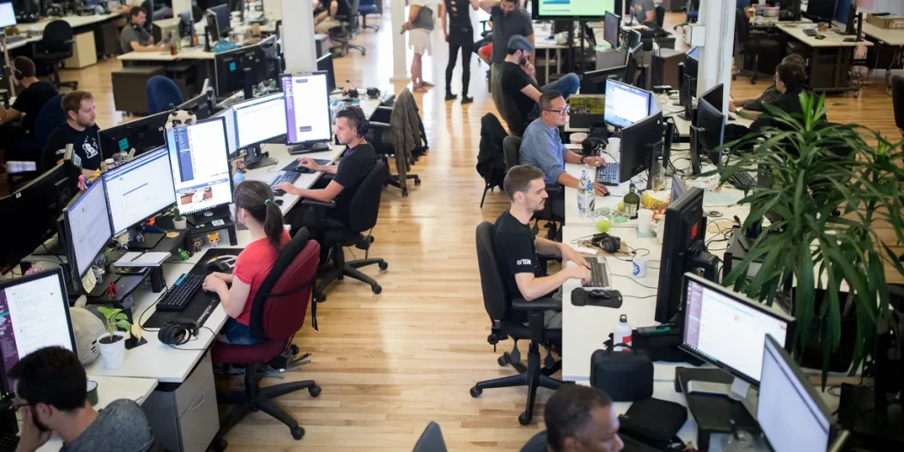

Game Engines
Here is a deeper look into Popular Game Engines today and the differences between them.

Game Development is a long process that can include many people in creating a collective work of audiovisual storytelling. Game Development involves many different aspects in order to come together and create something that people will enjoy for many years afterwards. This process includes many different roles that will put this game together and I will be looking at different engines, languages, and stages of development that go into the development process.
Here are some of the main roles that are necessary in game development
Here is a deeper look into Popular Game Engines today and the differences between them.
These are popular languages in Game Development and why they are used.
Seven stages of development that will go into game development and why they are necessary.